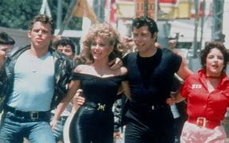
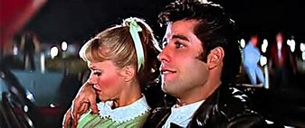
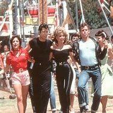

Sinopsis
La historia de amor entre Danny Zuko y Sandy Olsson en un ambiente escolar de los años 50. Mientras que Danny es el líder de los T-Birds, Sandy es una chica dulce que intenta encajar. Juntos descubrirán que el amor puede superar cualquier obstáculo.
Detalles
- Director: Randal Kleiser
- Género: Musical, Comedia, Romance
- Año: 1978
- Duración: 110 minutos
- Clasificación: PG
Tráiler
Imágenes



Comentarios
Crítica: "Un musical inolvidable que ha dejado huella en generaciones."
Usuario: "Las canciones son pegajosas y la historia es encantadora."
Regresar